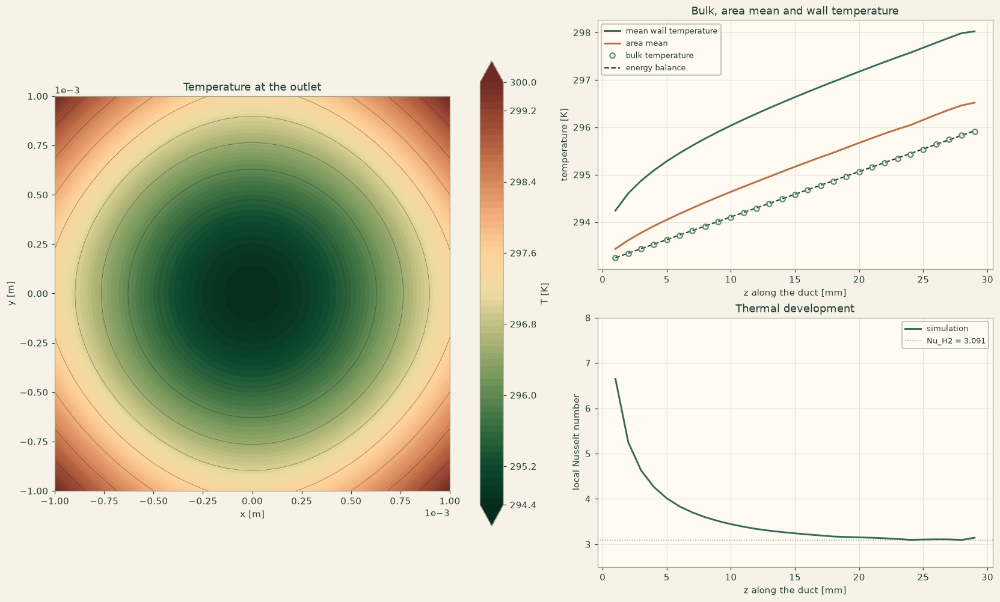
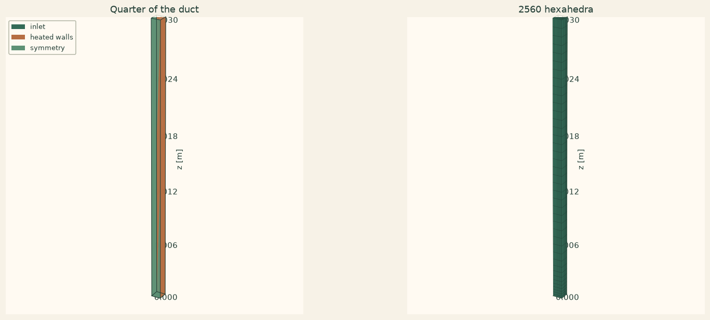

Docs › Examples › Bulk temperature in a heated square duct
Forced convection · 3D
Bulk temperature in a heated square duct
Water in a square duct with uniformly heated walls, and the bulk (mixing-cup) temperature that every heat transfer coefficient refers to.
Run locally with OneSimulation. The example downloads are free. Running them requires an activated runtime. Runtime Alpha 0.2.1a7 · CPython 3.13 on macOS (Apple Silicon), Ubuntu 22.04 (x86-64), and Windows x64. Installation and activation · View pilot plans. Scope of the reference checks.

What it computes
OneSimulation solves the steady laminar flow with Taylor-Hood elements and lets it drive the convective heat transfer one way on graded hexahedra of a quarter duct read from STEP. The bulk temperature along the duct comes from the integration operators (enthalpy flux over flow rate through cross-sections) and is compared with the area mean and the mean wall temperature. The script that builds the STEP file comes with the notebook.
What it checks
The bulk temperature follows the energy balance within 25 mK of a 2.78 K rise, the flow rate through the quarter matches the prescribed one to 0.08 %, and the fully developed Nusselt number of 3.124 lies 1.1 % above the tabulated Nu_H2 = 3.091; the area mean instead of the bulk temperature would give 4.40.
Geometry
The notebook starts at the import of the CAD file bulk_temperature_square_duct.step: STEP (AP242), readable by any CAD program, with the names of the faces that the boundary conditions use. Put it next to the notebook.

The geometry script
The script bulk_temperature_square_duct_geometry.py builds the geometry with the CAD objects of OneSimulation and writes the file. Change a dimension there, run it, and run the notebook again.
"""Geometry of the OneSimulation example "Bulk temperature in a heated square duct".
Builds one quarter of a square duct (2 x 2 mm cross-section, 30 mm long) with the CAD objects of
OneSimulation and writes bulk_temperature_square_duct.step. The flow runs along z; the faces keep
the names of the box: z_min (inlet), z_max (outlet), x_max and y_max (the heated walls) and x_min
and y_min (the symmetry planes through the duct axis).
"""
from onesim.cad.d3 import Box
Box(length=1.0e-3, width=1.0e-3, height=30.0e-3).save(
"bulk_temperature_square_duct.step"
)The notebook
The complete notebook, cell by cell. Run it to produce the figures and the comparison printout.
Water (density 1000 kg/m³, viscosity \(10^{-3}\) Pa s, conductivity 0.6 W/(m K), heat capacity 4180 J/(kg K), \(Pr=7\)) flows through a square duct of side \(a=2\) mm at \(Re=20\) and enters at 293.15 K with a fully developed velocity profile. All four walls take up the uniform heat flux \(q=2000\) W/m². The flow is solved with the steady Navier-Stokes equations and carries the heat,
A heat transfer coefficient is always defined with the bulk temperature, the temperature the fluid would reach if the cross-section were collected and mixed,
not with the plain area mean: the fast core carries more enthalpy than the slow fluid near the hot walls.
One quarter of the duct comes from the CAD file bulk_temperature_square_duct.step (faces z_min inlet, z_max outlet, x_max and y_max walls, x_min and y_min symmetry planes); the script bulk_temperature_square_duct_geometry.py builds it with the CAD objects of OneSimulation.
| face | flow | heat | |---|---|---| | z_min | fully developed profile, \(Re=20\) | \(T=293.15\) K | | z_max | traction free | no conduction | | x_max, y_max | no slip | heat flux \(q\) | | x_min, y_min | free slip | no flux |
Reference. The energy balance fixes the bulk temperature exactly at every station, \(T_b(z)=T_\mathrm{in}+q\,P\,z/(\dot m c_p)\) with the perimeter \(P=4a\). Far from the inlet the temperature profile no longer changes shape; for a square duct with peripherally uniform wall flux the Nusselt number based on the mean wall temperature is \(Nu_{H2}=3.091\) (Shah and London, Laminar Flow Forced Convection in Ducts, 1978, Table 42).
import numpy as np
from onesim.cad.d2 import Plane
from onesim.cad.exchange import load
from onesim.materials import IsotropicSolid, NewtonianFluid
from onesim.meshing import Geometric, Piecewise, StructuredHexahedralMesher, Uniform
from onesim.numerics import Numerics
from onesim.numerics.fem import FiniteElement, GalerkinAdvection, Lagrange, TaylorHood
from onesim.numerics.linear import SparseDirect
from onesim.numerics.nonlinear import Newton
from onesim.physics.heat_transfer import (
ConvectiveHeatTransfer,
FixedTemperature,
HeatFlux,
)
from onesim.physics.hydrodynamics import (
FixedVelocity,
FlowTraction,
FreeSlipLaw,
IncompressibleNavierStokes,
NoSlipWall,
WallShear,
fully_developed_inflow,
)
from onesim.results.derived import derived_field
from onesim.results.integration import integrate_plane, mean_value
from onesim.results.sampling import field_function
from onesim.simulation import Problem, Simulation
from onesim.simulation.initial_conditions import InitialValue
from onesim.visualization import plots, theme
theme.set()Geometry and mesh
A hexahedral mesh, finer towards the heated walls and towards the inlet.
duct = load("bulk_temperature_square_duct.step")
faces = duct.boundaries
half, _, length = duct.size
side = 2 * half
mesh = StructuredHexahedralMesher(
cells=(8, 8, 40),
grading=(
Geometric(8, ratio=3.0, toward="end"),
Geometric(8, ratio=3.0, toward="end"),
Piecewise(
(
(0.2 * length, Geometric(12, ratio=4.0, toward="start")),
(0.8 * length, Uniform(28)),
)
),
),
).generate(duct)
view = plots.Camera(elevation=25, azimuth=-60)
fig = plots.figure(1, 2, size=(14, 5.5))
plots.geometry(
duct,
selection={
"inlet": faces.z_min,
"heated walls": faces.x_max | faces.y_max,
"symmetry": faces.x_min | faces.y_min,
},
labels=False,
camera=view,
title="Quarter of the duct",
ax=fig[0],
)
plots.mesh(
mesh,
groups=("all",),
legend=False,
camera=view,
title=f"{mesh.cell_count} hexahedra",
ax=fig[1],
)
plots.show()Flow and heat transfer
The solved velocity drives the heat transport one way (constant properties).
water = NewtonianFluid(density=1000.0, dynamic_viscosity=1.0e-3)
conductivity, capacity, flux, inlet = 0.6, 4180.0, 2000.0, 293.15
mean_speed = 20.0 * water.dynamic_viscosity / (water.density * side)
walls, symmetry = faces.x_max | faces.y_max, faces.x_min | faces.y_min
flow = IncompressibleNavierStokes(domain=duct.volume, material=water)
velocity = (
Simulation(
problem=Problem(
name="Duct flow",
geometry=duct,
physics=(flow,),
boundary_conditions=(
FixedVelocity(
boundary=faces.z_min,
physics=flow,
value=fully_developed_inflow(
mesh, faces.z_min, mean_velocity=mean_speed, no_slip=walls
),
),
FlowTraction(
boundary=faces.z_max,
physics=flow,
value=lambda x, y, z: np.zeros((len(x), 3)),
),
NoSlipWall(boundary=walls, physics=flow),
WallShear(boundary=symmetry, physics=flow, law=FreeSlipLaw()),
),
initial_conditions=(InitialValue(flow.velocity, (0.0, 0.0, 0.0)),),
),
mesh=mesh,
numerics=Numerics(
spatial=FiniteElement(element=TaylorHood()),
initial_guess={flow.velocity: (0.0, 0.0, 0.0)},
nonlinear_solver=Newton(
linear_solver=SparseDirect(),
absolute_tolerance=1e-14,
relative_tolerance=1e-10,
),
),
)
.solve_stationary()
.field(flow.velocity)
)
heat = ConvectiveHeatTransfer(
domain=duct.volume,
velocity=field_function(velocity),
material=IsotropicSolid(
density=water.density,
specific_heat_capacity=capacity,
thermal_conductivity=conductivity,
youngs_modulus=1.0,
poisson_ratio=0.3,
thermal_expansion_coefficient=0.0,
),
)
temperature = (
Simulation(
problem=Problem(
name="Duct heat transfer",
geometry=duct,
physics=(heat,),
boundary_conditions=(
FixedTemperature(boundary=faces.z_min, physics=heat, value=inlet),
HeatFlux(boundary=walls, physics=heat, value=-flux),
HeatFlux(boundary=faces.z_max | symmetry, physics=heat, value=0.0),
),
),
mesh=mesh,
numerics=Numerics(
spatial=FiniteElement(
element=Lagrange(order=2), convection=GalerkinAdvection()
),
linear_solver=SparseDirect(),
),
)
.solve_stationary()
.field(heat.temperature)
)Bulk temperature
derived_field forms \(u_zT\), integrate_plane integrates it and the axial velocity over a cut across the duct, and their ratio is the bulk temperature. mean_value on the same cut gives the area mean, and on the wall line the mean wall temperature.
stations = np.linspace(1e-3, length - 1e-3, 29)
cut = lambda z: Plane(origin=(0, 0, z), normal=(0, 0, 1))
carried = derived_field(
velocity,
lambda u, points: u[:, 2] * np.ravel(temperature.evaluate(points)),
name="enthalpy_flux",
unit="K*m/s",
)
bulk = np.array(
[
integrate_plane(carried, cut(z)).value
/ integrate_plane(velocity, cut(z), normal_component=True).value
for z in stations
]
)
area_mean = np.array([mean_value(temperature, plane=cut(z)) for z in stations])
s = np.linspace(0.0, half, 21)
wall = np.array(
[
np.mean(
np.r_[
temperature.evaluate(
np.column_stack((np.full_like(s, half), s, np.full_like(s, z)))
),
temperature.evaluate(
np.column_stack((s, np.full_like(s, half), np.full_like(s, z)))
),
]
)
for z in stations
]
)
balance = inlet + flux * 4 * side * stations / (
water.density * mean_speed * side**2 * capacity
)
nusselt = flux * side / (conductivity * (wall - bulk))
developed = stations > 0.6 * length
print(
f"Re = 20, Pr = {water.dynamic_viscosity * capacity / conductivity:.2f}; flow rate through the quarter "
f"{integrate_plane(velocity, cut(length / 2), normal_component=True).value / (mean_speed * half**2):.5f} x the prescribed"
)
print(
"z [mm] bulk T [K] energy balance [K] deviation [mK] area mean [K] mean wall T [K]"
)
for z, tb, te, ta, tw in list(zip(stations, bulk, balance, area_mean, wall))[::4]:
print(
f"{1e3 * z:6.1f} {tb:12.4f} {te:18.4f} {1e3 * (tb - te):14.2f} {ta:15.4f} {tw:15.4f}"
)
print(
f"largest deviation of the bulk temperature from the energy balance: {1e3 * np.abs(bulk - balance).max():.2f} mK "
f"of {balance[-1] - inlet:.3f} K rise"
)
print(
f"fully developed Nusselt number (last 40 %): {nusselt[developed].mean():.4f}, tabulated Nu_H2 = 3.091 "
f"({100 * (nusselt[developed].mean() / 3.091 - 1):+.2f} %)"
)
print(
f"using the area mean instead of the bulk temperature would give Nu = "
f"{(flux * side / (conductivity * (wall - area_mean)))[developed].mean():.3f}"
)Figure
The temperature on the outlet cross-section, the three temperatures along the duct and the local Nusselt number.
fig = plots.figure(
layout=[["outlet", "temperatures"], ["outlet", "nusselt"]], size=(15, 9)
)
plots.section(
temperature,
plane=cut(length - 1e-6),
contours=10,
subdivisions=3,
symmetry={"planes": [((1, 0, 0), (0, 0, 0)), ((0, 1, 0), (0, 0, 0))]},
label="T [K]",
xlabel="x [m]",
ylabel="y [m]",
title="Temperature at the outlet",
ax=fig["outlet"],
)
plots.line(
1e3 * stations,
{"mean wall temperature": wall, "area mean": area_mean},
points={"bulk temperature": (1e3 * stations, bulk)},
reference={"energy balance": (1e3 * stations, balance)},
xlabel="z along the duct [mm]",
ylabel="temperature [K]",
title="Bulk, area mean and wall temperature",
legend="upper left",
ax=fig["temperatures"],
)
plots.line(
1e3 * stations,
{"simulation": nusselt},
hlines={"Nu_H2 = 3.091": 3.091},
ylimits=(2.5, 8),
xlabel="z along the duct [mm]",
ylabel="local Nusselt number",
title="Thermal development",
ax=fig["nusselt"],
)
plots.show()Going further
Hold the walls at a fixed temperature instead and compare with \(Nu_T=2.976\); make the duct rectangular in bulk_temperature_square_duct_geometry.py and follow the Nusselt number with the aspect ratio; or heat only one wall, as in a cold plate.